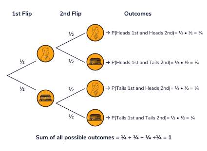

Home
Probability Basics
Set Theory
- Set Sets are a collection of elements where each element is unique, and order doesn't matter. Represented by curly braces and often denoted by a capital letter e.g. A = {Book, Folder, Pen, Paper, Hat}
- Subset One set is a subset of another if each element of the set is contained in the other. e.g. A is a subset of B if A = {1, 3, 2} and B = {4, 2, 1, 5, 3}
- Union The union of two sets is the set of all elements that appear in at least one of the two sets, written as (A or B)
- Intersection The intersection of two sets is the set of all elements that appear in both of the two sets, written as (A and B)
- Complement The complement of a set is all the elements not in the set, but in some superset, written AC. In the context of probability, your superset would be the sample space, and the set would be an event, and its complement would be all sample points not in the event. So, the event and its complement cover the entire sample space.
Basic Terms
- Experiment/Trial An Experiment is something that produces observations with some degree of uncertainty. A single run of an experiment is a Trial.
- Sample Point/Sample Space A Sample Point is a single possible outcome of an experiment, and the Sample Space of an experiment is the set of all possible sample points of the experiment.
- Event An event is set of outcomes or a single outcome and is a subset of the Sample Space.
- Dependence/Independence Independent events means the outcome of one event does not effect the probability of the other event. e.g. flipping a coin twice, the outcome of the first flip does not effect the outcome of the second flip. Dependent events means one event does effect the probability of the other, e.g. pulling marbles out of a bag that are either blue or red, the first time you pull a marble out is going to change the probability of what you pull out after that.
- Mutually Exclusive Two events are mutually exclusive if their intersection is empty. e.g. flipping a coin the event of getting heads is mutually exclusive from the even of getting tails. But rolling a die the event of getting an even number is not mutually exclusive frmo the event of getting a number greater than three. An event and its complement are always mutually exclusive.
- Probability If we run an experiment an infinite number of times, the probability of a given event is the proportion of times it occurs. This is known as the frequentist interpretation of probability. This is denoted mathematically as P(Event) = (Number of times event occurred)/(Number of Trials).
- Conditional Probability This is the probabiity of an event A occuring given than another event B occurs, and is written P(A|B). If the events are independent, then P(A|B) = P(A) and P(B|A) = P(B). However this is not true if the events are dependent, e.g. if B is first picking a blue marble out of a bag of red and blue marbles, and A is second picking a red marble, then A is dependent on B because the ratio of red to blue marbles changes after the first pick.
- Addition Rule The probability of event A happening or event B happening (or both) is P(A or B) = P(A) + P(B) - P(A and B). If A and B are mutually exclusive, then P(A and B) = 0, but if they are not, then you have to subtract the probability of their intersection or else you'll be double counting.
- Multiplication Rule The probability of event A happening and event event B happening is P(A and B) = P(A) * P(B|A). If A and B are independent, the P(B|A) = P(B), but if they are not, then you have to take into account the probability of B occuring given A occuring. This provides a definition of conditional probability as P(B|A) = P(A and B) / P(A).
- Bayes' Theorem This states that P(B|A) = P(A|B)*P(B) / P(A) = P(A and B)/P(A). This is true because the set A and B = B and A. Thus P(A and B) = P(B and A), thus P(A) * P(B|A) = P(B) * P(A|B), and thus P(B|A) = P(B) * P(A|B) / P(A)
- Tree Diagrams This is a way of visually diagramming multiple experiments and their sample space, and you can see how the multiplaction rule works and Bayes' Theorem.
- Here is a diagram for independent events:

- And here is a diagram for dependent events. The first experiment is whether someone has strep throat, and P(ST) is the event that they do and has a 20% probability. The second experiment is running a test for strep throat and the events are either a positive or negative test result. The probabilities of the events are dependent on whether the person has strep throat or not. If you wanted to know the probability of having strep throat given you had a positive test, then you could use Bayes' theorem: where P(ST|+) = P(+|ST) * P(ST) / P(+)
- Law of Large Numbers You can't perform an infinite number of trials of an experiment, but the law of large numbers is that as you perform more and more trials, the probability of any given event will converge to its true probability.
- For example, say the experiment is flipping a coin twice and the observation is which side of the coin lands up on each flip.
- There are four possible sample points for this experiment depending on the side of the first flip and the side of the second flip. The full sample space could be represented as S = {HH, HT, TH, TT}
- Possible events you might be interested in are getting two heads, A = {HH}, getting two tails, B = {TT}, or getting a heads and a tails, C = {HT, TH}
- You might run 1000 trials of the experiment, and notice that {HH} occurred 252 times. Thus you could estimate the probability of getting two heads with two coin flips is P({HH}) = 252/1000 = .252 = 25.2%